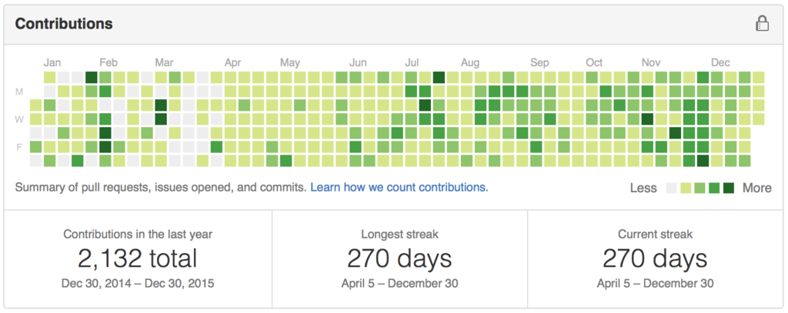
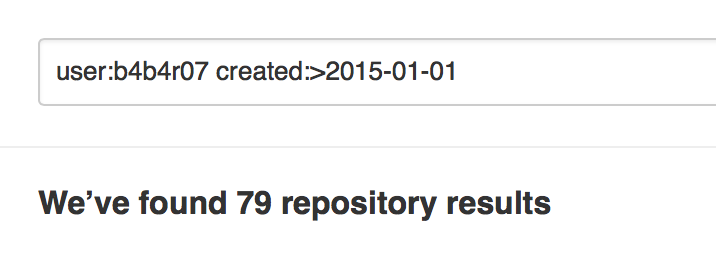
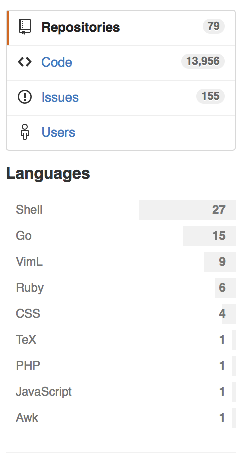

今年はたくさんのプロダクト・ツール・プラグインなどを作った。すべてを GitHub に公開し、git コマンドの操作体系や GitHub などのソーシャルコーディングについても少し詳しくなれた気がする。SNS ライクにやり取りできる GitHub はとても楽しい。
GitHub Advanced search で検索してみた結果、

総リポジトリ数が90なので、今年つくったものだけで全体の89%にあたる。ゆえに今年は結構活動した年だったといえるようだ。この結果は Twitter のツイートのアナライジングからも見て取れる。
https://twitter.com/b4b4r07/status/677389940095713280
たくさんリポジトリを構えてものづくりに取り組んだ2015年であったが、今回はそんな中でも個人的に有用または多くのスターを獲得できたリポジトリを中心に振り返っていこうかと思う。
zplug はおそらく 2015 年で最も注力したプロダクトだ。「zsh 用のプラグインマネージャを作りたい」といった野望や、「自分が作るならこんな設計にしたい」といった構想などは結構前からあったのだけど、実際につくりはじめたのは11月末からだった。1ヶ月をしないで100スターを獲得し、自分の中ではとてもお気に入りである。
zplug の生い立ちは少し特殊で既存の zsh プラグインマネージャ（Antigen や zgen など）の影響はほとんど受けず、Vim のプラグインマネージャを参考に設計された。そのためか neobundle.vim の作者（Shougo さん）や vim-plug の作者（junegunn さん）からスターやコメントをもらえたり、嬉しかった思い出がある。
詳しくは以下のエントリで。
cd コマンドの拡張を書いた。zsh では cdr という標準機能があり、peco や fzf と組み合わせる術が流行ったように思う。個人的にこの類の他のツールや cdr は合わなかった or 細部が気に食わなかったのでシェルプラグインとして新たに作り直した。カスタマイザブルなのがいいところで fzf や peco など自分が使いたいフィルタを選べるようになっている。また、初めて200スターを超えた作品となった。
コマンドラインで emoji を扱いやすくするための zsh プラグイン。補完を fzf などのフィルタツールで模擬的に実装している。コマンドラインから絵文字入りのコミットメッセージなどを補完するのに便利で、編集距離を計算してあいまい検索ができる。
HTTP のステータスコードをコマンドラインから検索するためのツール
ssh キーをコマンドラインから作成するのは ssh-keygen でできるが、GitHub に公開鍵を登録するのは意外と面倒だったりする。そんなとき関連したエントリを発見し、PR などを送っているうちに新しいツールとして切り出したのがこれ。
zsh 用のコマンドで（zsh さえインストールされていれば bash でも動くが）gomi を再発明したもの。gomi は Go 言語で実装されており、簡単な fzf/peco ライクなインタラクティブフィルタを内蔵しているが、そのクォリティが低いためシェルスクリプトで fzf を利用する形で作りなおしたもの。名前からも分かる通り、コマンドラインからゴミ箱を利用するコマンドになっていて OSX で利用する場合、システムのゴミ箱とも連携できるのが強み。
その他
user:b4b4r07 created:>2015-01-01
最後に
実を言うと id:rhysd さんのエントリ に触発されてつくったもののまとめ記事を書いた。草を生やす技術を含め、個人的に参考になるエントリが多い。
（やばい…やばいぞ。書いていて思ったが、2015年は紹介できるような Vim プラグインを作っていないじゃないか…。来年は Vim プラグインをもっと作りたい。）
